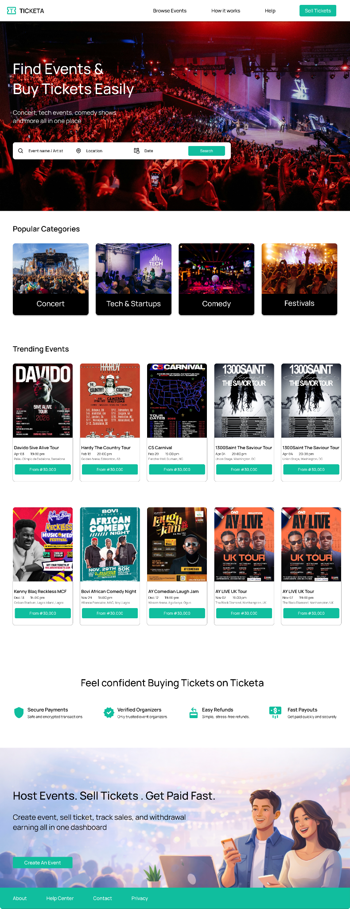
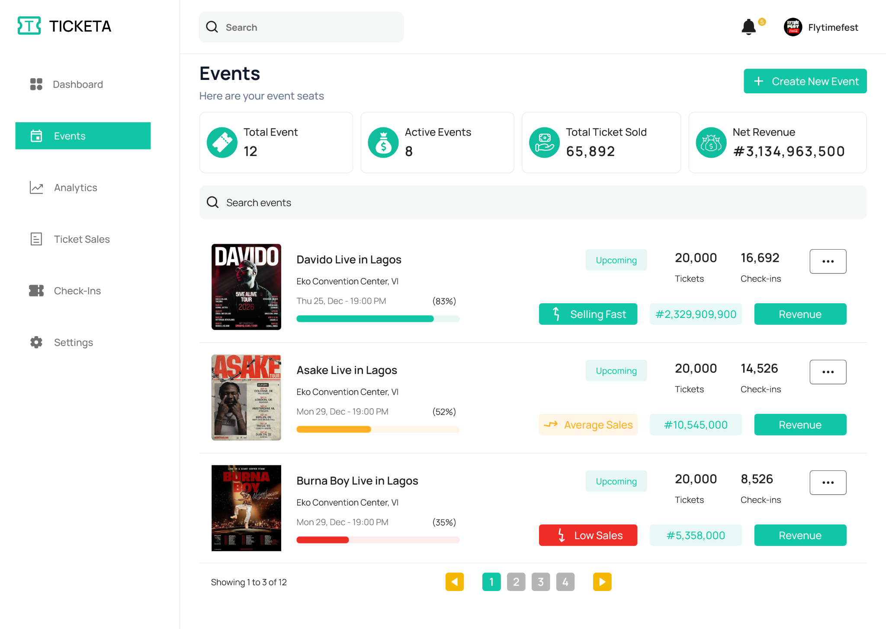
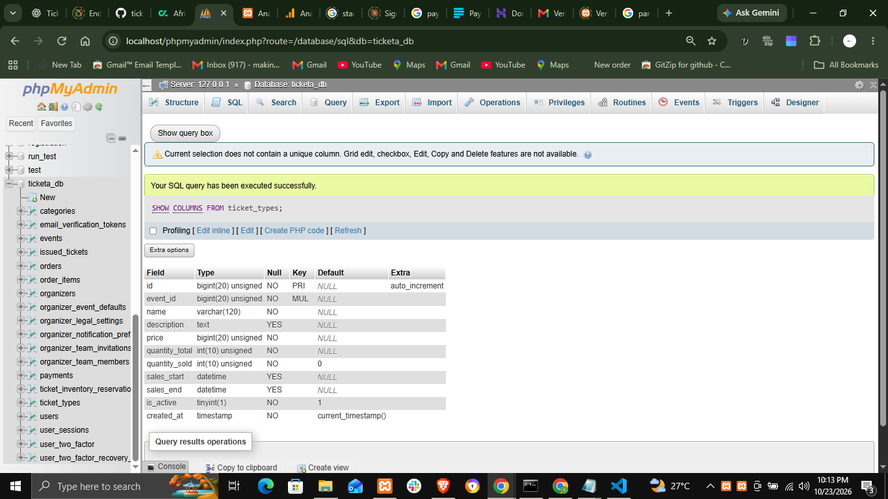
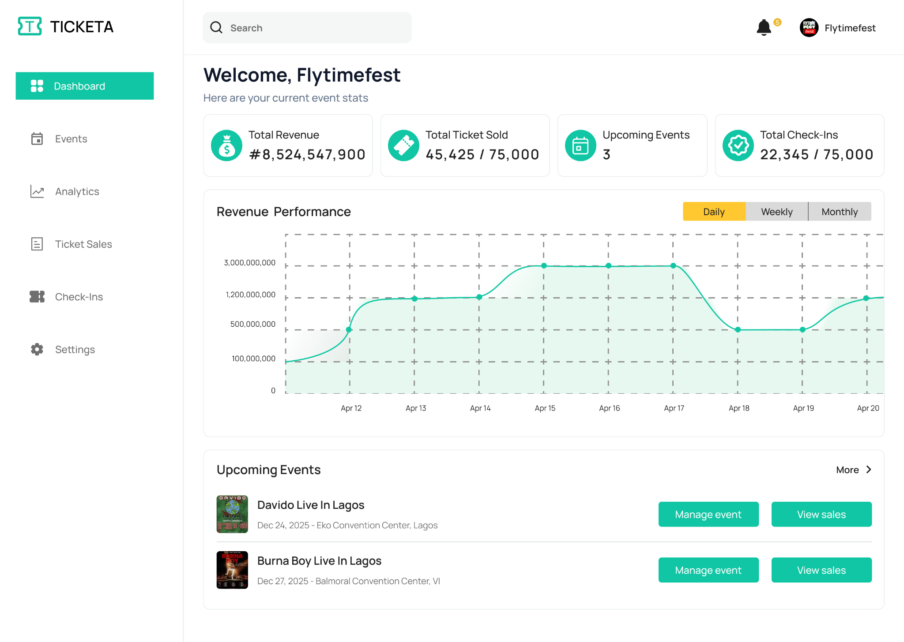
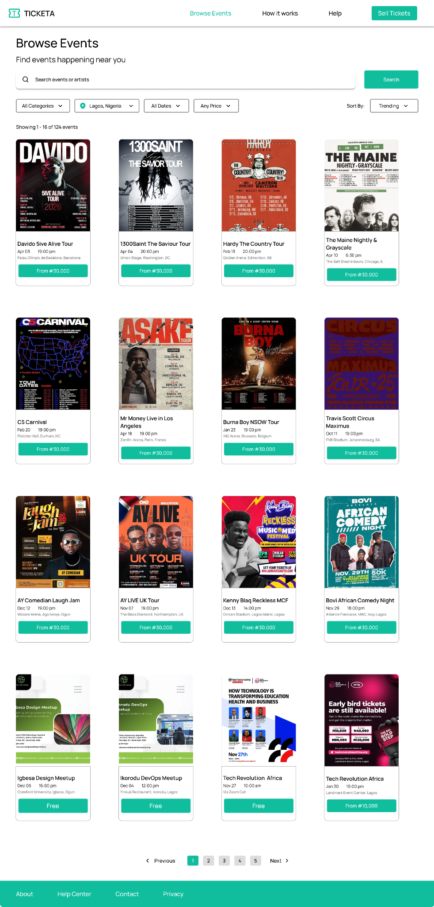
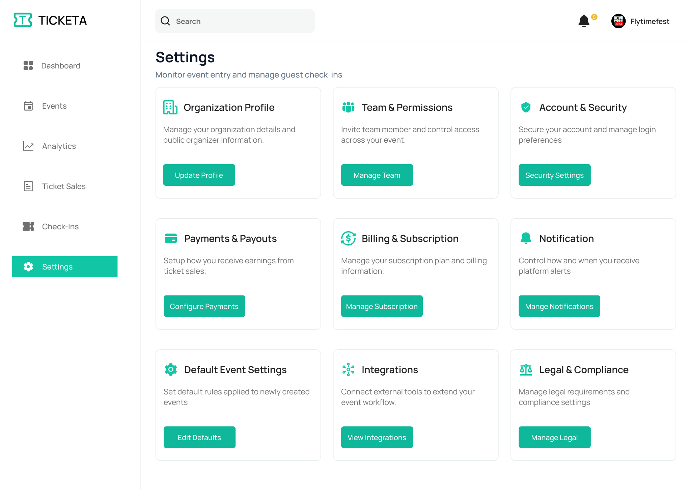
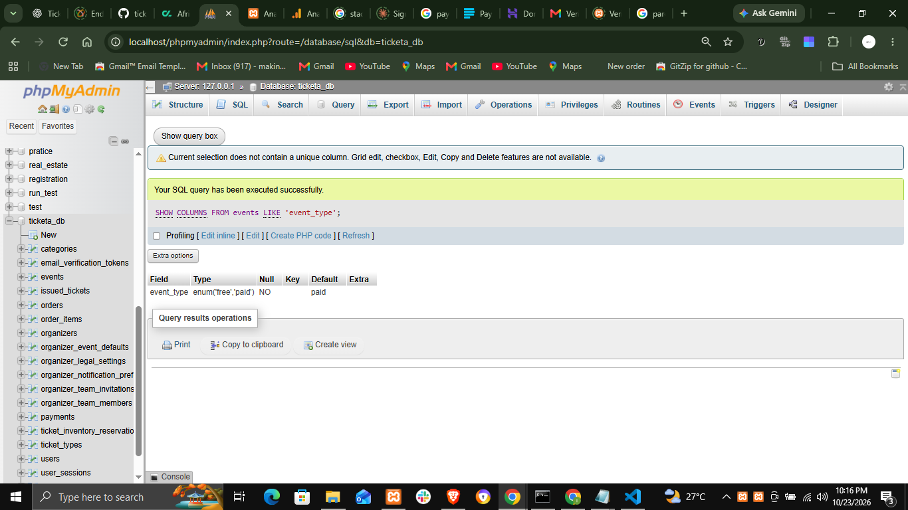
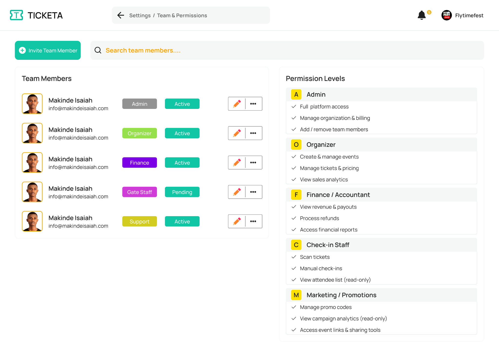
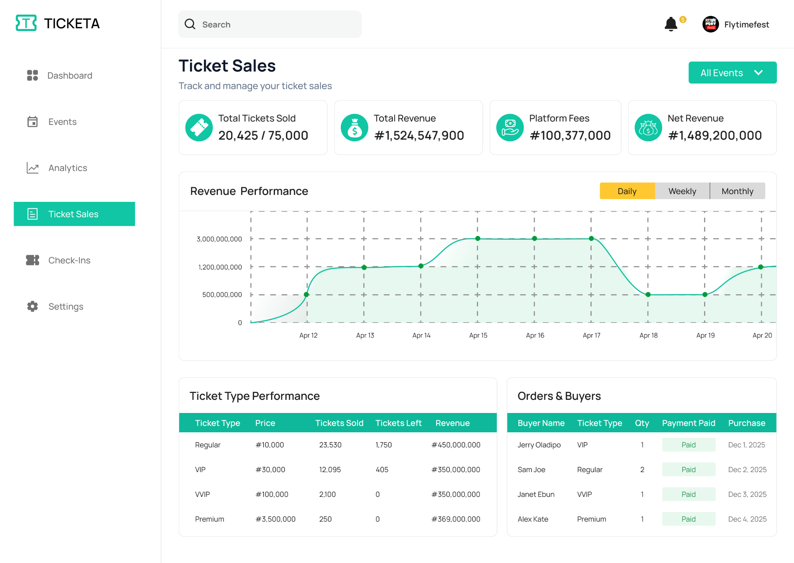
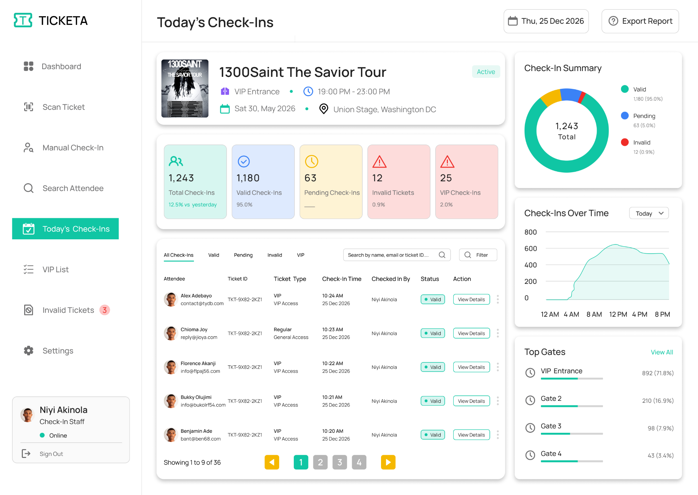

Attendees browse the event listing and open an event to review details and available ticket options.
CASE STUDY / EVENT TECHNOLOGY · PRODUCT DESIGN & WEB DEVELOPMENT
Ticketa.
An event ticketing platform connecting event discovery, ticket purchasing, organizer operations and attendee check-in.
01 / PROJECT OVERVIEW
A product built around a complete user journey.
Ticketa is an event ticketing platform being developed with the Abidjan and wider Côte d’Ivoire event market in mind. It brings the attendee experience and the operational tools needed by organizers and gate staff into one connected product.
Primary audience: Event attendees looking for events and tickets; organizers who create and manage events; and gate staff responsible for checking tickets at entry.
02 / THE PROBLEM
The need behind the experience.
Event attendance involves more than displaying an event poster and selling a ticket. Attendees need a clear way to discover events and complete a purchase, while organizers need to publish events, manage ticket inventory and understand sales. At the venue, staff need a reliable way to validate tickets and control entry.
03 / PROJECT OBJECTIVES
What the experience is designed to achieve.
- Make event discovery and ticket selection straightforward for attendees.
- Give organizers a central place to create events and manage ticket sales.
- Generate digital tickets that can be checked at the event entrance.
- Support staff workflows, including QR scanning and manual check-in.
- Prepare checkout for local payment methods and XOF transactions.
04 / HOW IT WORKS
A walkthrough of the main user journey.
The attendee chooses a ticket type and proceeds through checkout, providing contact details before payment.
After a successful purchase or free registration, the intended flow generates a digital ticket with a scannable code.
Organizers use the dashboard to manage events, ticket availability, sales information and organization settings.
Organizers manage team access and permissions so staff can be assigned operational responsibilities.
Gate staff use the scanner or manual check-in workflow to look up and validate attendee tickets.
05 / CORE FEATURES
Capabilities explained in context.
Attendee discovery
A public-facing experience for browsing events and moving from a listing to event details and ticket selection.
Organizer dashboard
A management area that brings event operations and ticket sales information together.
Event and inventory management
Tools for creating and managing event information and ticket availability, including sold-out states.
Checkout and payment preparation
A checkout flow designed to collect attendee details and connect to Paystack. The integration is currently in test mode.
Digital ticketing and check-in
QR-based ticket validation supported by a staff scanner and a manual check-in alternative.
Team permissions
An organizer workflow for inviting staff and managing access to event operations.
06 / DESIGN APPROACH
Designing for clarity and continuity.
The product has distinct experiences for attendees, organizers and gate staff. I approached these as connected workflows rather than forcing every user into one interface. The attendee side prioritizes event discovery and purchase. The organizer side prioritizes operational visibility and management. The gate staff side focuses on quickly finding and validating a ticket. The visual system follows Ticketa’s premium dark-navy and purple direction, with event artwork providing visual energy.
07 / IMPLEMENTATION
From interface design to product build.
The current version uses HTML, CSS and vanilla JavaScript on the frontend, with PHP, PDO and MySQL for server-side logic and data. It is being developed locally. Paystack is configured in test mode, and the product is still undergoing implementation and end-to-end checks. It has not been publicly launched.
EXPLORE THE PRODUCT
Experience Ticketa on the web.
Visit the current product website to explore the platform.
Visit Live Website ↗Website address to be connected.
The screens, in context.
All 10 original supplied project images are included. Select any screen to view it at full size.










09 / CHALLENGES
The decisions behind the work.
A key challenge is coordinating several roles and stages of the event lifecycle: a ticket must be available for purchase, correctly associated with an attendee, and validated at the entrance. This requires consistent ticket status handling across checkout, organizer tools and check-in. Payment and ticket-validation edge cases remain part of ongoing testing.
10 / KEY LEARNINGS
What I took away from the project.
This project has strengthened my understanding of designing and implementing a multi-role product. It has required me to think beyond individual screens and consider how attendee, organizer and staff actions depend on the same event and ticket data.
In development · Local testing · Paystack in test mode · Not publicly launched. Paystack is in test mode; the product is not publicly launched.